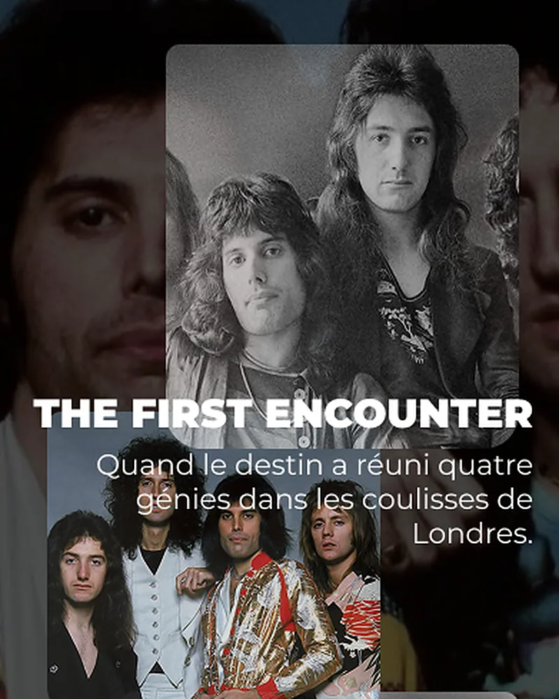
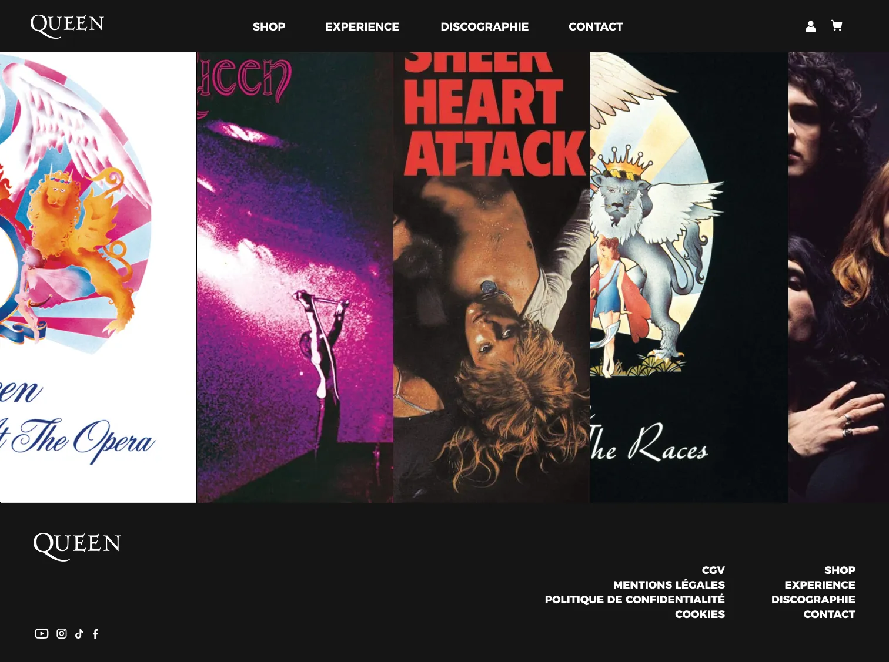
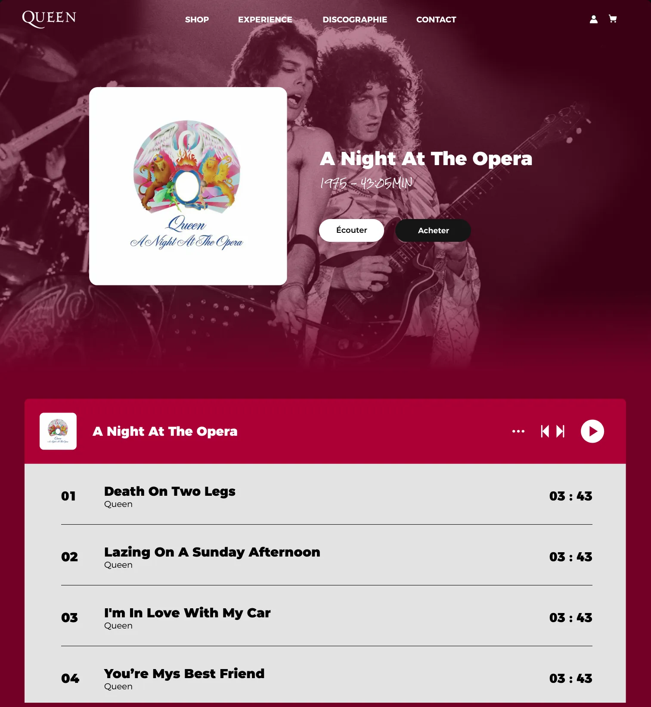
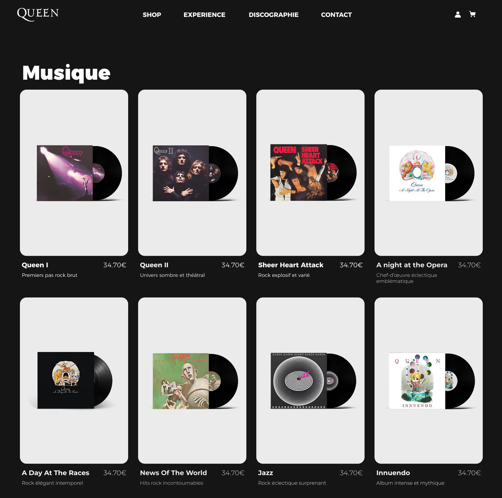
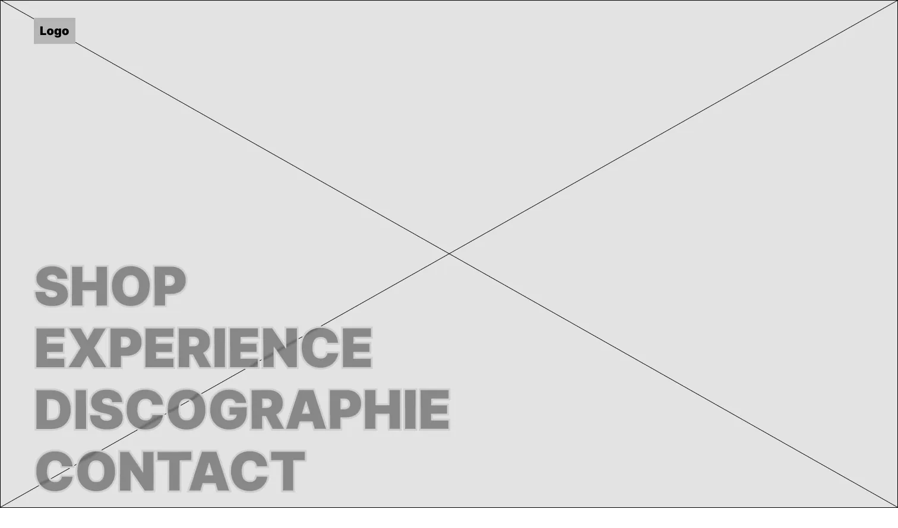
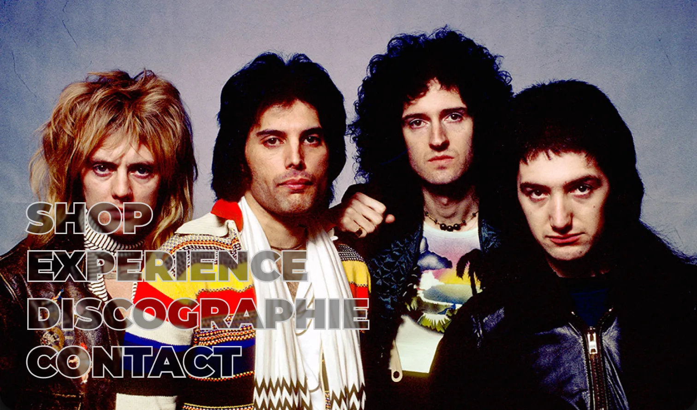
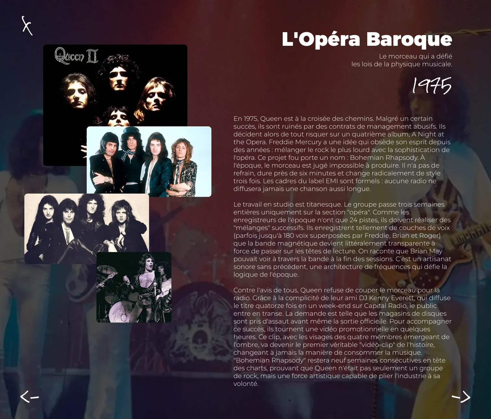

Queen
Site vitrine et boutique pour Queen, projet Yboost à Ynov Bordeaux, 2026. Un mois à quatre : trois sur Figma, une personne sur WordPress. Mon rôle : moodboard, wireframes et prototype interactif, desktop et mobile.
Voir le prototypeLe projet
Un artiste, un site, une boutique.
Queen, c'est un projet étudiant fait à quatre pour le Yboost, à Ynov Bordeaux. Le principe : prendre un ou plusieurs artistes et leur créer un site WordPress, vitrine et vendeur, avec une boutique, pour montrer leur projet. On a choisi Queen. Trois d'entre nous ont travaillé sur Figma, une personne sur WordPress. Chacun des trois a fait son moodboard, et l'équipe a gardé celui qui l'intéressait le plus. Les typos et les couleurs, on les a choisies ensemble. Moi, j'étais sur Figma : le moodboard, la récupération des photos et des images, et tout le prototypage de la maquette, des wireframes au prototype.

Des wireframes au prototype, desktop et mobile.
À deux, on a posé les wireframes, en desktop et en mobile : l'accueil, la discographie, la fiche album, la boutique, la fiche produit, la page Experience. Puis le prototype, desktop et mobile lui aussi. On a essayé de le pousser le plus loin possible, à être limite fonctionnel dans les limites de Figma. Ce n'est pas un site, Figma ne le permet pas, mais tout ce qui est bouton interactif marche. On a mis les sons, la liste des albums du groupe, et avec elle toute une biographie animée en parallaxe, qui se lit d'une étape à l'autre.


Un prototype fait pour la suite.
Le prototype n'était pas une fin en soi. La personne qui faisait le site sur WordPress partait de lui : chaque écran, chaque bouton qui répond, le parcours de la boutique à la fiche produit, tout devait être là pour qu'elle ait le mieux possible entre les mains. C'est pour ça qu'on l'a poussé aussi loin. En tout, un mois environ, et autour de seize heures de travail en comptant les cours.

Ce que j'en retiens.
Le prototype lui-même.